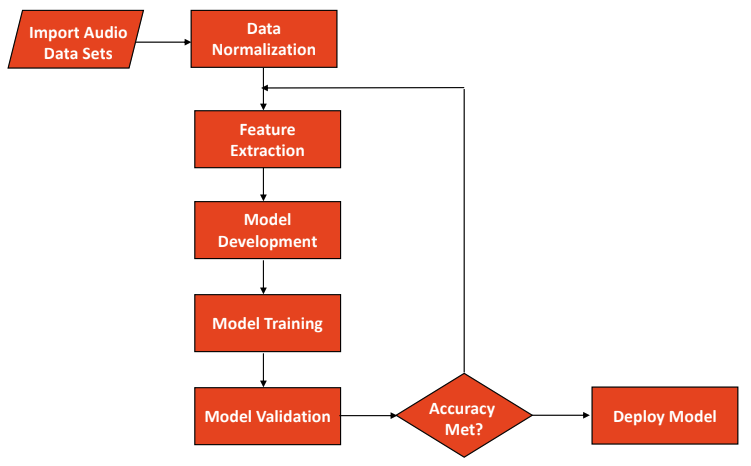
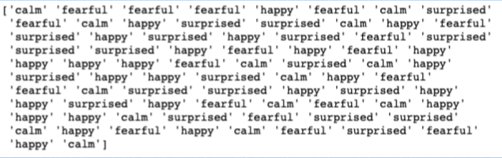

Detecting Emotion from Speech Using Machine Learning to Aid Children with ASD
Co-Designer
Initials: S.P. My Co-designer is my grandma. She currently lives in India, but everyone once in a while, she will come a visit us in America for a couple of months. Before she retired, she was an english teacher in her local elementary school. In her free time, she plays poker, golf with her husband, and crochets. Nowadays, she volunteers at her local orphanage, where she teaches young children diagnosed with autism spectrum disorger (ASD). After I interviewed her, she said that once of the biggest things the children struggled the most with was detecting and understanding emotion through speech.
Co-Designer Needs Statement
- Something that will make it easier for her students to detect emotion
- Something that will make it easier for her students to understand the different emotions
Product Requirements
The product that ends up made must be very easy to use, as young children will be interacting with it the most.
Initial Brainstorming Narrative
Because I have a background in CS, I choose to help my grandma by making software that would Detect Emotion from Speech using Machine Learning. My initial brainstorm, is that I would use a FeedForward ANN (Artificial Neural Network), where I would train my model using a big professional dataset, consulting of 24 professional actors speaking with different emotion. After that, I plan to train my model again using a smaller dataset that deals with people diagnosed with ASD.
Final Prototype
Build Description
When building my software, I had two main iterations. The first iteration consisted of my training my model of a professional dataset (RAVDESS). The second iteration of my model consisted of me training my model off of my voice, and then taking in user input through the microphone.

Test PlanTo test my first iteration of my model (trained off of dataset), I wanted to give my model 10% of the dataset, to test to see if it works. So I ended up giving my model a bunch of wav files, and then ran it to see what it would output.
For my second iteration of my model, I planned on talking into my microphone, and saying the same sentence with different emotions each time. If it was able to predict that emotion that I tried to convey, I knew that my model was working off microphone input.

ResultsMy model ended up with an accuracy of 81.54%, and was able to correctly predict the emotions in user sentences taken from microphone input, and it could also predict emotions from wav files.
Future Improvements
The main thing I want to do in the future is find more data. The dataset I used was pretty small, and only contained 691 files. So I was forced to use a subset of the emotions: [calm, happy, surprised, fearful], to make sure that my model wouldn’t have a low accuracy if I implemented all 8 emotions.
Another idea that is really cool and interesting is putting my software into an an amazon echo dot. In India, the students have Alexa’s in their room, so it would be a lot more convenient to have Alexa be able to predict emotion off of microphone input, instead of having to sit infant of a computer screen and having to keep talking to your computer screen.
Scalability
Another idea that is really cool and interesting is putting my software into an an amazon echo dot. In India, the students have Alexa’s in their room, so it would be a lot more convenient to have Alexa be able to predict emotion off of microphone input, instead of having to sit infant of a computer screen and having to keep talking to your computer screen.
Design Process Reflection
Taking this course, and looking back on what I was able to achieve. I felt that I had done a pretty good job with my design process. Although it was hard to communicate with my codesigner, I was able to overcome that by having people I know test my software.